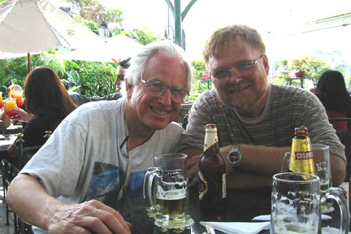
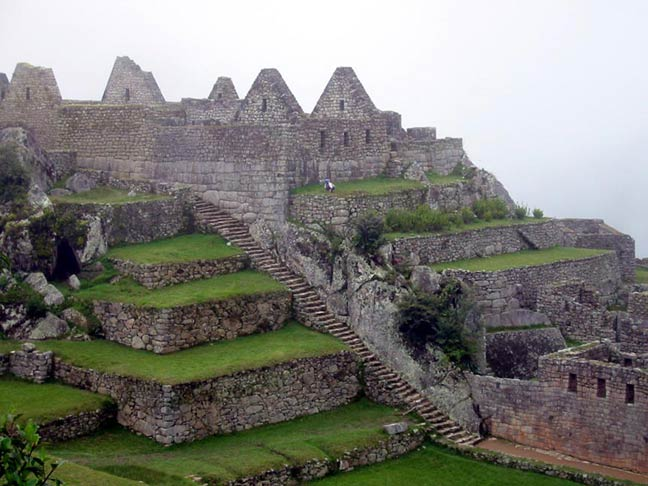
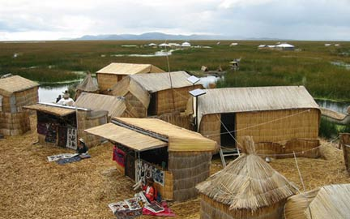
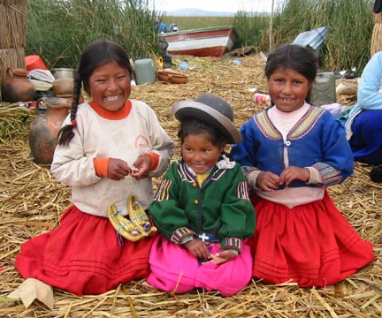

===============================
Subject: In Peru
Date: Wed, 06 Mar 2002 20:19:11
From: Bill Sundstrom
To: Betty Cassady, John Cassady
Huge problems today.
I made it to Trujillo.
Will be in Lima Tomorrow.
John do I need to get you a room, or do I need to get a big room for us to share for a couple of days
I will check my email about noon tomarrow to see if you respond.
The stress of dealing with the bearucats is getting to me.
I figure I was robbed by the government here today.
$175 for my first landing.
Enough of that.
See you guys soon,
Bill
===============================
Main Plaza of Lima

Subject: Getting to Peru
Date: Fri, 08 Mar 2002 16:52:26
From: Bill Sundstrom
To: Betty Cassady
Cc: Dain Sundstrom
The last couple of days have been very hard on me. The problems in Peru have felt overwhelming and very depressing ? but I think I am past the problems for now and will just have to deal with them at a later date. Here is what has been happening:
Wednesday the 6th:
I went to the Guayaquil Airport early in the morning and planned my flight to Talara. Talara was only two hours away, but I soon learned that it was much further away because my permission to enter Peru had been rescinded. They wanted a copy of another document. The fax communications can be very difficult and it took some time to get the fax off. Once sent I waited two hours before I finally received permission to enter. So at one I started on the journey to Talara. The uneventful flight ended only to be replaced with problems galore. First, they had no AV gas. Luckily the next airport with gas was within my range. Second, I discovered that the fees for using were in the insane range. They charge a small one ton aircraft like mine the same as a 55 ton jet, 20 cents (US) per kilometer. Yes, I paid a whopping $175. The next day I paid another $120 to fly 2.5 hours to Trujillo. I owe them another $130 for the flight to Lima and it will be another $200 to the border. Dead tired I spent the night in Trujillo. The horns of passing cars and other hotel residents made it hard to sleep but finally I did get to sleep.
Thursday, the 7th:
The early up pattern repeated itself. After a light breakfast I headed to the airport. Off to Lima I went. Both on Wednesday and Thursday I learned a lot about Peru from the air. First it is the opposite of Ecuador. Between the sea and the mountains is the desert. North of Trujillo a trees can be seen ever 200 meters or so. South of Trujillo nothing grows except for the sand dunes. The only green is where there is one of the very rare irrigated areas, or for a half mile strip along one of the few rivers. It is the driest desert in the world. Here and there mountains pop up along the coast or on the desert plain. It is so strange to see sand dunes climbing up, in and through a mountain ? yet that is what I saw. The beaches are empty of people, palms or anything green. Another oddity is the way the sand jumps up 100 to 400 meters from the beach. I often saw it jump up 100 to 200 feet. Exhausted from all the hassles, I took a two hour nap before walking three short blocks to the main plaza. I seem to get in conversations with people.
I sat a bench and soon three different people asking me questions about who I was and what I was doing. I spent a couple hours talking to one fellow, Alejandro. With him it was in English. He is a university graduate, but with high unemployment here, he is just a survivor. I gave him 5 soles for his diner on Friday. After diner I read. At midnight I went to the airport to get your brother John. He spent the night at my hotel.
Today, the 8th of March:
John and I went to a great museum, Museo a la Nacion. Then we went to a better of section of town near the beach and reserved rooms for Sunday when you will arrive. We took the bus back from Miraflores. We also got some good advice. John and I think the following will work well for us: We should take a couple of days to get to Lake Titicaca. Then explore the lake area. Then we go to Cuzco and explore it and the Inca trail. Finally, you and I will fly by jet back to Lima for a couple of days. There are no direct trains of buses to Cuzco. We must go through Arequepa.
That's it for now.
I will call later.
Bill
===============================
Lima Libations with John

Subject: Lima and the way to Cuzco
Date: Wed, 13 Mar 2002 12:07:04
From: Bill Sundstrom
To: Birgitta Sundstrom
The hotel John and I have been staying in is a very interesting place with a lot of Character. The entry is a large arch on the poor and run down street called Ica. Through the arch is a second portal of wrought iron and glass. The building must have been an elegant house at one time that was cut up into smaller rooms. The ceilings are very high: 12 to 16 feet. In our very small room they seemed to go on forever. The clientele is a mix of people form all over the world. I like it, the people that ran it, the guests ? but the surroundings were a bit tough.
Saturday, the 9th of March:
We tried walking to a couple of museums. After an hour or more of walking I started looking for a taxi. We went to the Museo Rafael Larco Herrera. It is the best that I have seen for antiquities anywhere. One part of the museum shows the various stage and types of Moche culture and pottery . In another part there were stacks of pieces numbering 45,000 on shelves going up to a 15-foot ceiling. We saw more that 10,000 of them. The next museum was much like the one on Friday only it had more original pieces. Museum out, we took a taxi back to el centro. John got cleaned up and rested. We headed out for a restaurant and noticed that the plaza was the same girl we met the day before, only she had her friends Lesley, Miguel and Daniel with. They wanted to practice there English and extract a few soles from us. We carried on a length conversation with them while John and I ate. Daniel and Miguel were gay and nice guys. Daniel could not keep his hand off my leg. They wanted us to join them on an excursion to Miraflores that we declined. John gave them 10 soles for the cab to Miraflores.
Sunday, the 10th:
First there was the Museum of the Inquisition. Then we packed and headed for Miraflores. Miraflores is a delightful area to the south of the city center. Peaceful, quiet, and middle class, it was a nice change from the center. We did some exploring. We found an ancient ruins a couple hundred meters from our hostal. Later we walked to the park and looked at the work of local artists. It seem that a major theme here is the faceless peasant with a large straw hat working in the fields. We went to the airport at 9:00 PM to pick up your mom. It was great to see her and be with her ? the first time in two months.
Monday the 11th:
We spent the day figuring out how we would get to Cuzco. While John and Betty checked out the bus lines, I wrapped up requesting permission to land in another airport in Peru and entering Chilean airspace. The 30 hour bus ride set us in a mood to fly. We got a flight set up for 6:00 AM the next day for only $35 more per person than the bus.
Tuesday the 12th:
We were up before 3:30, in the taxi before 4: and at the airport about 4:30 AM. Cuzco is a short flight. We were checked into the Hostal Oblitas before 8:00 AM. After breakfast, we decided to walk to the ruins, sacsayhuaman, that overlook Cuzco. . Unlike most days it was sunny and comfortable. It became quickly evident that this might not be the best course of action. The altitude here is greater than 11,000 feet and almost 12,000 in the ruins. Symptoms of altitude sickness came quickly with headaches and dizziness. Still, we had an enjoyable time; the ruins and the view of Cuzco were wonderful. Betty and I split with John when we got back to the plaza. Betty and I had beers and pizza in a great balcony overlooking the main plaza. After that we went to our room to rest. I got an extra blanket because it is in the 50s and 60s here. Before long we were fast asleep. Except for waking to take Tylenol and some altitude pills Betty brought. We slept from 4:00 in the afternoon until 7:00 this morning.
Today:
I have decided not to go on the 42 km hike that John and your mom will do. Instead I will meet them at Machu Picchu on Sunday. Since 11,500 is doing me in I do not want to try the 13,800 they will do. The rest of the day we will explore the city.
Your loving dad,
Bill
===============================
Subject: More from Cuzco
Date: Fri, 15 Mar 2002 16:55:57
From: Bill Sundstrom
To: Birgitta Sundstrom
Prelude:
After sending off my last email, and between eating a couple of time we visited the town museum. The meals were very cheap and fairly tasty and only 3 soles.
Yesterday the 14th:
I do not think that I will ever eat a such an expensive place. I was sick all night long. The worst case of travelers diarrhea yet with the fever I always get. I took medicine and slept as best I could. Your mom and John were up early to leave on their trek on the Inca Trail. I got up for an hour to eat and change rooms. Then I went back to sleep. Once in the afternoon a thunderstorm woke me. I hope your mom kept out of it. Finally, very late in the afternoon I got up and went out for soup. Then I watched Jerry McGuire on a TV in reception. I was in bed by 10 PM.
Today, Friday the 15th:
Things went much better today. I had a slow start. After breakfast, I walked to the bank then to a train station in narrow streets. Finally, in the last of these streets humanity press close and tried to pick my pocket. Moments later at the station to Machupicchu, I discovered one must buy tickets at the other station. I gave up, still not being 100% and the pick-pockets, and took a cab. It seemed to take forever to get the tickets, but finally I had them in hand. I had arranged with the taxi driver to take me to the ruins a Pisaq. Along the way, we stopped at the minor ruins of Pukapukara and Tambomachay. Though small they were worth it. The archeology park of Pisac was glorious. There was an entire community on a well-terraced mountain. There were more than 20,000 tombs in one area, and areas for a military garrison, a granary or food storage, and an astronomical observatory. It seems that the Incas did a lot of agricultural experimentation. They found what plant grow best at what altitudes and climates on the terraces. For example, they found the higher the potato grows the smaller the plant and the larger the tuber. They also developed one of the largest and sweetest varieties of corn in the world. The other great thing is that it was sunny and clear all day long. Since today was to be the hardest of the 4 day trek to Machupicchu for Betty, at least the weather was great.
Tomorrow, I will leave early for Machupicchu and Agua Caliente. I will spent the night in Agua Caliente and meet up with your mom on Sunday morning. We will take a train back to Cuzco late in the afternoon.
Take care and be good.
Love,
Dad
===============================
Subject: To Machupicchu and back
Date: Mon, 18 Mar 2002 12:13:14
From: Bill Sundstrom
To: Dain Sundstrom
The latest installment follow.
One thing, how come I never hear from you?
What have you been up to?
Saturday the 16th:
Up early and at the train station before 6:00 AM. The only way to Machupicchu is by train. It left on time at 6:30. The train had to climb over a set of surrounding mountains on a switchback route. Train switchbacks are different from road switchbacks, because when the train is switched it 60 minutes to leave the Cuzco area. Then the train usually goes down from about 3500 meters around Cuzco to 2000 meters at Aguas Calientes. The train travels in the valley of the Urubamba River passing many majestic mountains, valley gardens and farms of corn, onions, melons and squash. Then there are the pastures and herds of cows raise for meat and milking. It had the feeling of early 20th century farming in the US. I saw no machinery. I saw women milking cows by hand in large open pens. Pigs, sheep and lamas could be seen all along the way. The people looked hard-working, fairly healthy, and the children often had waves and smiles for those on the train. When valley widened agriculture and small towns dominated the scenery, and when it narrowed it was dominated by the river. The Urabamba flows north; coursing, surging, roaring its way to the Amazon and its waters to the Atlantic. Now it is the rainy season. The reddish waters tumble and churn with such dynamic power that the most experienced rafters would be quickly devoured by the raging waters. For miles and miles the waters raged and our tiny train on narrow tracks rocked and swayed and bounced along. After checking into the Hospeda Aguas Calientes, and while it I caught a soccer game being played by 45+ year-old men on a cement pitch. I sat under a tarp and kept dry along with another American women and her 85 year-old mother. Her husband, a Peruvian, was playing. I found them Rebecca and Betty to be interesting people. She told me some good stories that I wish I had time to write about now ? so ask me about them when I get home.
Machupicchu in the Morning

Sunday, the 17th:
I was up and to the buses to Machupicchu before 6:30 and in the park by 7:00. I climbed to an area where Betty and John would come into the park. The site was stunning, but five minutes later it was shrouded in a deep fog. I waited and read. About 8:30 I discovered the place that I had choose was 60 meter to the wrong. A German youth helped me discover this and as the fog lifted loaned me his binoculars to scan the site below. Almost immediately I saw John. They had passed in about 8:00. It was great to see them alive but very worn out. I joined their tour of Machupicchu. Machupicchu is an amazing place to visit. It is a complete and pretty much in tact Inka site. It is very compact. It can be seen in just a few hours. It contains all the typical temples and icons of the Inka and every thing is in such good condition. The only place that we did not see, the temple of the Moon, is a bit difficult and dangerous to get to. We took a hundred or more photos, and they will tell the story much better than the words that I might write to you now. Betty will bring them home with her. Finally we wound our way down the mountain. And yes, the little boy dressed in the indian outfit was there to greet at us at every switch back, shouting good-bye. It seems that a stairs going down allows him to keep up with the bus. While I had heard this story from my Argentinean friends it was hard to believe ? but there it was. John and Betty were totally exhausted by then and had the odor of a four days on the trail. One hundred kilometers and five hours later we were in Cuzco again and in our hotel with hot water and real beds for the trekkers.
Today, the 18th of March:
We are cleaning our cloths, packing, getting ticket and generally preparing for our journey to Puno and Lake Titicaca. It is another 1000 feet up in altitude.
Be safe and take care.
Love,
Dad
===============================
Subject: Lake Titicaca
Date: Sat, 23 Mar 2002 19:41:22
From: Bill Sundstrom
To: Birgitta Sundstrom
Last Tuesday, the 19th of March:
We traveled most of the day by bus to Puno, a city on the shore of Lake Titicaca. The scenery was that of a series of valleys opening up onto the high plain of Peru and Bolivia. To visualize the high plain think of Montana only 10,000 feet higher, or 7000 feet higher than the area around Casper, Wyoming. On the plain there was an abundance of low grasses, some cattle, sheep, pigs, and alpaca, occasional fields of potatoes or oka. Puno has a nice feel to in some ways: It has two small squares full of locals and a nice short walking street. Nothing is quite as clean or nice as Cuzco - except it is easier to see Peruvians at work and play. The number of barkers working the restaurants, and shoeshine boys is way down here. Still there were plenty of beggars.
The Floating Islands of Titicaca

Island Children

Wednesday:
We started a two-day excursion to the floating islands of Uros and the real islands of Amantani and Taquile. The floating islands called Uros are built on dried reeds. The largest island is more than several square kilometers. Most of the buildings are also made of dried reeds, some with wood pole frames. The exceptions are the schoolhouse, which is on steel floats, is made of wood, and has a steel roof and churches. The people make a living from handicrafts, fishing and tourists. From here we went by boat for three hours on the great and beautiful Lake Titicaca, elevation 12,500 feet. We arrived at the island of Amantani about two in the afternoon. We broke up and were sent to the families we would spend the night with. John, Betty and I went with Valentina. She spoke neither English nor classish, only Quechua. The beds were good, but the home and the island would best be described as primitive, right out of the mid or early 1800's. They had electricity at one time, but could not afford the fuel to run the generator. Valentina made a good lunch on a clay stove heated with a grass and wood fire. We enjoyed the soup, fried potatoes and rice. We rejoined our tour group about 4:00 in the afternoon. John and I climbed with them to one of the two scared ruins on the island. The view from the top of the island, the peninsulas of Puno's bay, and the island of Taquile was wonderful. We heard the story how all the people of the island and some neighboring areas gather the 3rd Thursday of the New Year, on each of the two scared hills, half going to each hill. Then after a two-hour offering ceremony to the Mother and Father earth, they descended to the area between the hills and party for two-and-half days. We returned to our room where John and Betty quickly fell asleep. I guess it was too much like the ordeal to Machu Picchu. I ate some more soup, and then went to a dance at the school. It was all a bit funny to see all the Europeans and Americans dressed in local garb, but there it was: women in bright green or red skirts, a wide sash-belt and embroidered white blouses and men in ponchos and Andean hats. The dance was rudimentary and often frenzied. I headed back to sleep after a couple of hours of Peruvian music and dancing.
Thursday:
In the morning we rose and ate breakfast of fried bread and potatoes with the usual munyo or coca tea. We headed by boat to the island of Taquile. The island is small but slightly more developed. We hiked from one end of the island to the other. I saw the largest hummingbird on the way to the small town with its lovely square. The group ate at one of the many restaurants. In the square there were people selling handicrafts. Betty bought two nice pieces of jewelry for less than $20. After that, we enjoyed the glorious weather during our 3-1/2 hour boat ride back to Puno. During the two days, we got to know several people from several countries, including a couple that originally came from Minnesota. With luck I will visit a woman we met, when I get to Buenos Aires. In Puno the weather turned cold and windy in the evening. Still we had a great supper.
Friday:
I had enough of the mountains with their very thin air, cold and often rainy weather, and the poverty. Betty must have agreed with my sentiments because she quickly agreed to go back to Lima. After buying some gifts, we spent much of the day trying to get to Lima. We finally arranged a fight from Juliaca through Arequipa to Lima. When we arrived I got some flight planning gear out of the plane. It took almost an hour to get the permission to walk the 300 meters to the plane and get the stuff. We were in Miraflores by 7:00 PM. After a quick rest we head out for a dinner. Thoroughly tired of the fairly boring cuisine, we were able to find Cuban restaurant.
Today and the next few days I am just going to relax and kick-back. Maybe go to a movie, read and be with your mom. Speaking of reading I just finish another good Michael Connelly book: A Darkness More Than Night.
Be good and take care.
Love,
Dad
===============================
Subject: Exiting Peru and on to Chile
Date: Fri, 29 Mar 2002 17:15:29
From: Bill Sundstrom
To: Betty Cassady
Cc: Dain Sundstrom
I was glad to hear that you made it back home. It was great to have you with for at least part of my odyssey.
I left for Chile yesterday. I was up just after 5:00 AM and got to the airport about 6:20. Three hours later after the slow bureaucratic shuffle and the slowest gas fillers on earth I left Lima and flew to Pisco. The charges as usual were horrendous. The killer is the ATC (?) charge for aircraft with foreign registration. While I think this is totally illegal they get away with it because you and your plane are essentially held hostage. The parking and landing fees seem to be reasonable, they were $102.20, but the over flight charge was a killer, totaling $496.18 - for a total of $598.38. This was much more that what your ticket to Peru cost. I personally think that AOPA or the US government should challenge Peru to rewrite their regulations for general aviation so that aircraft weighing less that four metric tons are exclude. By contrast Chile is a breath of sweet fresh air. The regulations and permissions here are even better than Costa Rica. The only thing that I had to pay was for a 30-day permit to fly here costing all of $20, and no landing or parking fees so far.
I love flying. I feel so good up in my little beech. The land between Lima and La Serena, Chile, is stark, dry, hostile, beautiful, and a wonder. How any one can live on the pacific side in Peru and northern Chile is beyond me.
By the way, yesterday I made it all the way to Antofagasta. I got in about 9:30 (lost one hour in a time zone change). By the time I got to town and ate it was nearly midnight. It was a very hard 18-hour day. Last night I could see that there were thousands of people in the street, but today - Good Friday - nary a soul could be found. I decided to leave there and left a little after noon. I flew to La Serena, the first green city along the coast since Ecuador. I got a room and may stay both Saturday and Sunday. I figure it make no sense to head to Santiago on Easter weekend. Monday will be soon enough. With luck I will find Carolina - the girl that invited me to visit when I got here - and she can clue me in on things to do and see in the Santiago area.
I will keep you up to date.
Love,
Bill
===============================